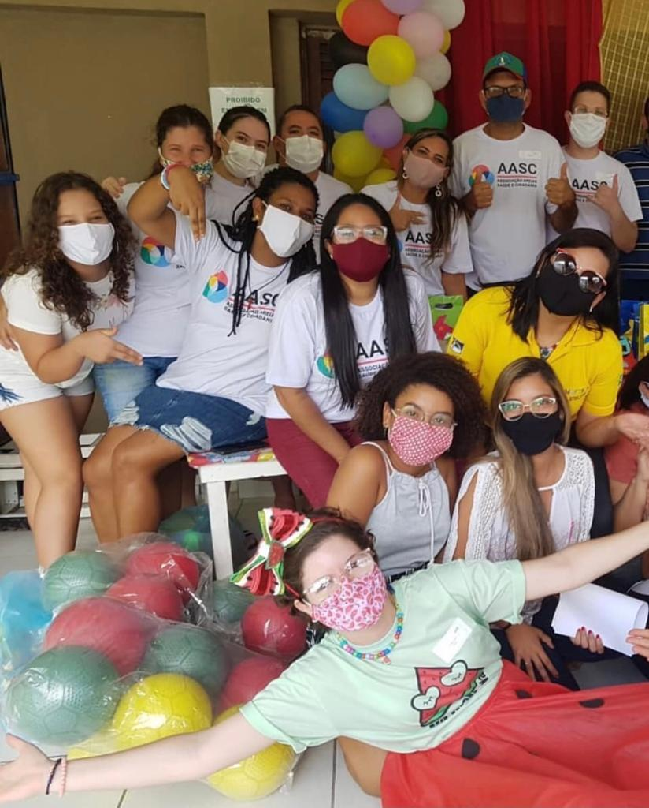

Quem Somos
Associação Areias de Saúde e Cidadania
A associação foi idealizada por um grupo de amigos: Euclides, Geraldino e Josemir durante um almoço em setembro de 2014. No bairro de Areais mais especificamente na comunidade do Capuá, não tinha um projeto que ajudasse. Começou a procura por voluntários, então Rosa que à princípio fazia a entrega do leite e medicamentos. Depois Rosa e Elias convidaram Amanda que hoje é a atual responsável, para participar, na época a mesma estava passando por um dos momentos mais difícies da sua vida, foi diagnosticada com câncer.
Então surgiram os trabalhos com saúde e cidadania na associação, um tempo de aprendizado e bastante força. Nesse meio tempo o câncer foi vencido e a AASC só tem crescido cada vez mais.
Hoje temos atividade de: Ballet, Psicóloga, Yoga, Reforço escolar, Catecismo, Aula de Inglês, Aula de Violão, Programa do Leite, Advogada, Grupo de Mulheres e eventos específicos, como encontros de agentes de saúde, bazar e outros.
A AASC é um projeto que promove saúde e cidadania para a comunidade da Zona Oeste do Recife, é independente e não recebe nenhuma ajuda de custo do governo. Ela se mantém a partir de doações e, para conseguir sobreviver e continuar realizando seu trabalho, precisa de sua ajuda!